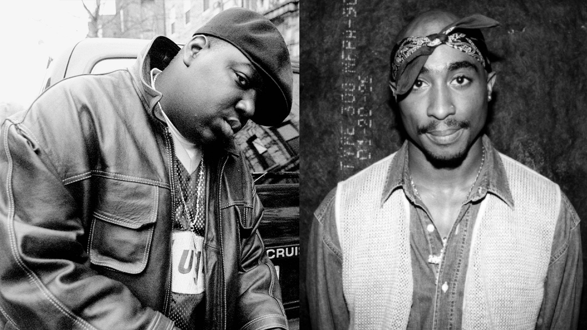

A timeline highlighting key events and milestones in the development of 90s hip-hop culture.
The songs of the 90s were infectious and revolutionary. They brought a unique blend of rhythm and poetry that captivated audiences worldwide.
1990: The Rise of West Coast Hip-Hop
Notable albums such as Ice Cube's "AmeriKKKa's Most Wanted" and Eazy-E's "Eazy-Duz-It" contribute to the surge of West Coast hip-hop.
1992: The Dawn of G-Funk
Dr. Dre's "The Chronic" introduces the world to G-Funk, setting the stage for a new era of hip-hop production.
1994: East Coast vs. West Coast Rivalry
The rivalry between East Coast and West Coast hip-hop reaches its peak, leading to the tragic deaths of Tupac Shakur and The Notorious B.I.G.
1996: The Rise of Mafioso Rap
Albums like Jay-Z's "Reasonable Doubt" and Nas's "It Was Written" popularize the mafioso rap subgenre.
1998: The Emergence of Southern Hip-Hop

Outkast's "Aquemini" and Master P's "MP Da Last Don" signal the rise of Southern hip-hop and its influence on the mainstream.